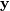
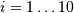
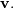

Linear Algebra (scipy.linalg)¶
When SciPy is built using the optimized ATLAS LAPACK and BLAS libraries, it has very fast linear algebra capabilities. If you dig deep enough, all of the raw lapack and blas libraries are available for your use for even more speed. In this section, some easier-to-use interfaces to these routines are described.
All of these linear algebra routines expect an object that can be converted into a 2-dimensional array. The output of these routines is also a two-dimensional array.
scipy.linalg vs numpy.linalg¶
scipy.linalg contains all the functions in numpy.linalg. plus some other more advanced ones not contained in numpy.linalg
Another advantage of using scipy.linalg over numpy.linalg is that it is always compiled with BLAS/LAPACK support, while for numpy this is optional. Therefore, the scipy version might be faster depending on how numpy was installed.
Therefore, unless you don’t want to add scipy as a dependency to your numpy program, use scipy.linalg instead of numpy.linalg
numpy.matrix vs 2D numpy.ndarray¶
The classes that represent matrices, and basic operations such as matrix multiplications and transpose are a part of numpy. For convenience, we summarize the differences between numpy.matrix and numpy.ndarray here.
numpy.matrix is matrix class that has a more convenient interface than numpy.ndarray for matrix operations. This class supports for example MATLAB-like creation syntax via the, has matrix multiplication as default for the * operator, and contains I and T members that serve as shortcuts for inverse and transpose:
>>> import numpy as np
>>> A = np.mat('[1 2;3 4]')
>>> A
matrix([[1, 2],
[3, 4]])
>>> A.I
matrix([[-2. , 1. ],
[ 1.5, -0.5]])
>>> b = np.mat('[5 6]')
>>> b
matrix([[5, 6]])
>>> b.T
matrix([[5],
[6]])
>>> A*b.T
matrix([[17],
[39]])
Despite its convenience, the use of the numpy.matrix class is discouraged, since it adds nothing that cannot be accomplished with 2D numpy.ndarray objects, and may lead to a confusion of which class is being used. For example, the above code can be rewritten as:
>>> import numpy as np
>>> from scipy import linalg
>>> A = np.array([[1,2],[3,4]])
>>> A
array([[1, 2],
[3, 4]])
>>> linalg.inv(A)
array([[-2. , 1. ],
[ 1.5, -0.5]])
>>> b = np.array([[5,6]]) #2D array
>>> b
array([[5, 6]])
>>> b.T
array([[5],
[6]])
>>> A*b #not matrix multiplication!
array([[ 5, 12],
[15, 24]])
>>> A.dot(b.T) #matrix multiplication
array([[17],
[39]])
>>> b = np.array([5,6]) #1D array
>>> b
array([5, 6])
>>> b.T #not matrix transpose!
array([5, 6])
>>> A.dot(b) #does not matter for multiplication
array([17, 39])
scipy.linalg operations can be applied equally to numpy.matrix or to 2D numpy.ndarray objects.
Basic routines¶
Finding Inverse¶
The inverse of a matrix is the matrix
such that where
 is the identity matrix consisting of ones down the
main diagonal. Usually is denoted
. In SciPy, the matrix inverse of
the Numpy array, A, is obtained using linalg.inv (A) , or
using A.I if A is a Matrix. For example, let
is the identity matrix consisting of ones down the
main diagonal. Usually is denoted
. In SciPy, the matrix inverse of
the Numpy array, A, is obtained using linalg.inv (A) , or
using A.I if A is a Matrix. For example, let
![\[ \mathbf{A=}\left[\begin{array}{ccc} 1 & 3 & 5\\ 2 & 5 & 1\\ 2 & 3 & 8\end{array}\right]\]](../_images/math/f15da1511a57d79b59b079b3b1bd20a88c00cbeb.png)
then
![\[ \mathbf{A^{-1}=\frac{1}{25}\left[\begin{array}{ccc} -37 & 9 & 22\\ 14 & 2 & -9\\ 4 & -3 & 1\end{array}\right]=\left[\begin{array}{ccc} -1.48 & 0.36 & 0.88\\ 0.56 & 0.08 & -0.36\\ 0.16 & -0.12 & 0.04\end{array}\right].}\]](../_images/math/6448dc8dd04285fd3eac2290ee7a0d0d5776b5d9.png)
The following example demonstrates this computation in SciPy
>>> import numpy as np
>>> from scipy import linalg
>>> A = np.array([[1,2],[3,4]])
array([[1, 2],
[3, 4]])
>>> linalg.inv(A)
array([[-2. , 1. ],
[ 1.5, -0.5]])
>>> A.dot(linalg.inv(A)) #double check
array([[ 1.00000000e+00, 0.00000000e+00],
[ 4.44089210e-16, 1.00000000e+00]])
Solving linear system¶
Solving linear systems of equations is straightforward using the scipy command linalg.solve. This command expects an input matrix and a right-hand-side vector. The solution vector is then computed. An option for entering a symmetrix matrix is offered which can speed up the processing when applicable. As an example, suppose it is desired to solve the following simultaneous equations:
We could find the solution vector using a matrix inverse:
However, it is better to use the linalg.solve command which can be faster and more numerically stable. In this case it however gives the same answer as shown in the following example:
>>> import numpy as np
>>> from scipy import linalg
>>> A = np.array([[1,2],[3,4]])
>>> A
array([[1, 2],
[3, 4]])
>>> b = np.array([[5],[6]])
>>> b
array([[5],
[6]])
>>> linalg.inv(A).dot(b) #slow
array([[-4. ],
[ 4.5]]
>>> A.dot(linalg.inv(A).dot(b))-b #check
array([[ 8.88178420e-16],
[ 2.66453526e-15]])
>>> np.linalg.solve(A,b) #fast
array([[-4. ],
[ 4.5]])
>>> A.dot(np.linalg.solve(A,b))-b #check
array([[ 0.],
[ 0.]])
Finding Determinant¶
The determinant of a square matrix is often denoted
and is a quantity often used in linear
algebra. Suppose  are the elements of the matrix
and let
be the determinant of the matrix left by removing the
row and column from
. Then for any row
are the elements of the matrix
and let
be the determinant of the matrix left by removing the
row and column from
. Then for any row
This is a recursive way to define the determinant where the base case is defined by accepting that the determinant of a matrix is the only matrix element. In SciPy the determinant can be calculated with linalg.det . For example, the determinant of
is
In SciPy this is computed as shown in this example:
>>> import numpy as np
>>> from scipy import linalg
>>> A = np.array([[1,2],[3,4]])
>>> A
array([[1, 2],
[3, 4]])
>>> linalg.det(A)
-2.0
Computing norms¶
Matrix and vector norms can also be computed with SciPy. A wide range of norm definitions are available using different parameters to the order argument of linalg.norm . This function takes a rank-1 (vectors) or a rank-2 (matrices) array and an optional order argument (default is 2). Based on these inputs a vector or matrix norm of the requested order is computed.
For vector x , the order parameter can be any real number including inf or -inf. The computed norm is
For matrix the only valid values for norm are  inf, and ‘fro’ (or ‘f’) Thus,
inf, and ‘fro’ (or ‘f’) Thus,
![\[ \left\Vert \mathbf{A}\right\Vert =\left\{ \begin{array}{cc} \max_{i}\sum_{j}\left|a_{ij}\right| & \textrm{ord}=\textrm{inf}\\ \min_{i}\sum_{j}\left|a_{ij}\right| & \textrm{ord}=-\textrm{inf}\\ \max_{j}\sum_{i}\left|a_{ij}\right| & \textrm{ord}=1\\ \min_{j}\sum_{i}\left|a_{ij}\right| & \textrm{ord}=-1\\ \max\sigma_{i} & \textrm{ord}=2\\ \min\sigma_{i} & \textrm{ord}=-2\\ \sqrt{\textrm{trace}\left(\mathbf{A}^{H}\mathbf{A}\right)} & \textrm{ord}=\textrm{'fro'}\end{array}\right.\]](../_images/math/554dc8584731014e0bec0140b3fc7b75c00cde7d.png)
where are the singular values of .
Examples:
>>> import numpy as np
>>> from scipy import linalg
>>> A=np.array([[1,2],[3,4]])
>>> A
array([[1, 2],
[3, 4]])
>>> linalg.norm(A)
5.4772255750516612
>>> linalg.norm(A,'fro') # frobenius norm is the default
5.4772255750516612
>>> linalg.norm(A,1) # L1 norm (max column sum)
6
>>> linalg.norm(A,-1)
4
>>> linalg.norm(A,inf) # L inf norm (max row sum)
7
Solving linear least-squares problems and pseudo-inverses¶
Linear least-squares problems occur in many branches of applied mathematics. In this problem a set of linear scaling coefficients is sought that allow a model to fit data. In particular it is assumed that data is related to data through a set of coefficients and model functions via the model
where represents uncertainty in the data. The strategy of least squares is to pick the coefficients to minimize
Theoretically, a global minimum will occur when
![\[ \frac{\partial J}{\partial c_{n}^{*}}=0=\sum_{i}\left(y_{i}-\sum_{j}c_{j}f_{j}\left(x_{i}\right)\right)\left(-f_{n}^{*}\left(x_{i}\right)\right)\]](../_images/math/d5e780ba1a0b43644c120d7cdfedf0cd81752b6e.png)
or
where
When is invertible, then
![\[ \mathbf{c}=\left(\mathbf{A}^{H}\mathbf{A}\right)^{-1}\mathbf{A}^{H}\mathbf{y}=\mathbf{A}^{\dagger}\mathbf{y}\]](../_images/math/6dc8365db33468ac649416f9b1ee52fb4d3581fa.png)
where is called the pseudo-inverse of Notice that using this definition of the model can be written
The command linalg.lstsq will solve the linear least squares problem for given and  . In addition linalg.pinv or linalg.pinv2 (uses a different method based on singular value decomposition) will find given
The following example and figure demonstrate the use of linalg.lstsq and linalg.pinv for solving a data-fitting problem. The data shown below were generated using the model:
where for  , , and Noise is added to and the coefficients and are estimated using linear least squares.
>>> from numpy import *
>>> from scipy import linalg
>>> import matplotlib.pyplot as plt
>>> c1,c2= 5.0,2.0
>>> i = r_[1:11]
>>> xi = 0.1*i
>>> yi = c1*exp(-xi)+c2*xi
>>> zi = yi + 0.05*max(yi)*random.randn(len(yi))
>>> A = c_[exp(-xi)[:,newaxis],xi[:,newaxis]]
>>> c,resid,rank,sigma = linalg.lstsq(A,zi)
>>> xi2 = r_[0.1:1.0:100j]
>>> yi2 = c[0]*exp(-xi2) + c[1]*xi2
>>> plt.plot(xi,zi,'x',xi2,yi2)
>>> plt.axis([0,1.1,3.0,5.5])
>>> plt.xlabel('$x_i$')
>>> plt.title('Data fitting with linalg.lstsq')
>>> plt.show()
Generalized inverse¶
The generalized inverse is calculated using the command linalg.pinv or linalg.pinv2. These two commands differ in how they compute the generalized inverse. The first uses the linalg.lstsq algorithm while the second uses singular value decomposition. Let be an matrix, then if the generalized inverse is
while if matrix the generalized inverse is
In both cases for , then
![\[ \mathbf{A}^{\dagger}=\mathbf{A}^{\#}=\mathbf{A}^{-1}\]](../_images/math/a7ccfa366bb288ff51298fd823f6c9bf7e60825b.png)
as long as is invertible.
Decompositions¶
In many applications it is useful to decompose a matrix using other representations. There are several decompositions supported by SciPy.
Eigenvalues and eigenvectors¶
The eigenvalue-eigenvector problem is one of the most commonly
employed linear algebra operations. In one popular form, the
eigenvalue-eigenvector problem is to find for some square matrix
scalars  and corresponding vectors
such that
and corresponding vectors
such that
For an  matrix, there are
matrix, there are  (not necessarily
distinct) eigenvalues — roots of the (characteristic) polynomial
(not necessarily
distinct) eigenvalues — roots of the (characteristic) polynomial
The eigenvectors, , are also sometimes called right eigenvectors to distinguish them from another set of left eigenvectors that satisfy
or
With it’s default optional arguments, the command linalg.eig
returns and  However, it can also
return and just by itself (
linalg.eigvals returns just as well).
In addtion, linalg.eig can also solve the more general eigenvalue problem
for square matrices and  The
standard eigenvalue problem is an example of the general eigenvalue
problem for When a generalized
eigenvalue problem can be solved, then it provides a decomposition of
as
The
standard eigenvalue problem is an example of the general eigenvalue
problem for When a generalized
eigenvalue problem can be solved, then it provides a decomposition of
as
where is the collection of eigenvectors into columns and is a diagonal matrix of eigenvalues.
By definition, eigenvectors are only defined up to a constant scale factor. In SciPy, the scaling factor for the eigenvectors is chosen so that
As an example, consider finding the eigenvalues and eigenvectors of the matrix
The characteristic polynomial is
The roots of this polynomial are the eigenvalues of :
The eigenvectors corresponding to each eigenvalue can be found using the original equation. The eigenvectors associated with these eigenvalues can then be found.
>>> import numpy as np
>>> from scipy import linalg
>>> A = np.array([[1,2],[3,4]])
>>> la,v = linalg.eig(A)
>>> l1,l2 = la
>>> print l1, l2 #eigenvalues
(-0.372281323269+0j) (5.37228132327+0j)
>>> print v[:,0] #first eigenvector
[-0.82456484 0.56576746]
>>> print v[:,1] #second eigenvector
[-0.41597356 -0.90937671]
>>> print np.sum(abs(v**2),axis=0) #eigenvectors are unitary
[ 1. 1. ]
>>> v1 = np.array(v[:,0]).T
>>> print linalg.norm(A.dot(v1)-l1*v1) #check the computation
3.23682852457e-16
Singular value decomposition¶
Singular Value Decompostion (SVD) can be thought of as an extension of
the eigenvalue problem to matrices that are not square. Let
be an matrix with  and
arbitrary. The matrices and
are square hermitian matrices [1] of
size and respectively. It is known
that the eigenvalues of square hermitian matrices are real and
non-negative. In addtion, there are at most
identical non-zero eigenvalues of
and
Define these positive eigenvalues as The
square-root of these are called singular values of
The eigenvectors of are collected by
columns into an unitary [2] matrix
while the eigenvectors of
are collected by columns in the
unitary matrix , the singular values are collected
in an zero matrix
and
arbitrary. The matrices and
are square hermitian matrices [1] of
size and respectively. It is known
that the eigenvalues of square hermitian matrices are real and
non-negative. In addtion, there are at most
identical non-zero eigenvalues of
and
Define these positive eigenvalues as The
square-root of these are called singular values of
The eigenvectors of are collected by
columns into an unitary [2] matrix
while the eigenvectors of
are collected by columns in the
unitary matrix , the singular values are collected
in an zero matrix
 with main diagonal entries set to
the singular values. Then
with main diagonal entries set to
the singular values. Then
is the singular-value decomposition of Every
matrix has a singular value decomposition. Sometimes, the singular
values are called the spectrum of The command
linalg.svd will return ,
, and as an array of the
singular values. To obtain the matrix  use
linalg.diagsvd. The following example illustrates the use of
linalg.svd .
use
linalg.diagsvd. The following example illustrates the use of
linalg.svd .
>>> import numpy as np
>>> from scipy import linalg
>>> A = np.array([[1,2,3],[4,5,6]])
>>> A
array([[1, 2, 3],
[4, 5, 6]])
>>> M,N = A.shape
>>> U,s,Vh = linalg.svd(A)
>>> Sig = linalg.diagsvd(s,M,N)
>>> U, Vh = U, Vh
>>> U
array([[-0.3863177 , -0.92236578],
[-0.92236578, 0.3863177 ]])
>>> Sig
array([[ 9.508032 , 0. , 0. ],
[ 0. , 0.77286964, 0. ]])
>>> Vh
array([[-0.42866713, -0.56630692, -0.7039467 ],
[ 0.80596391, 0.11238241, -0.58119908],
[ 0.40824829, -0.81649658, 0.40824829]])
>>> U.dot(Sig.dot(Vh)) #check computation
array([[ 1., 2., 3.],
[ 4., 5., 6.]])
| [1] | A hermitian matrix satisfies |
| [2] | A unitary matrix satisfies so that  |
LU decomposition¶
The LU decompostion finds a representation for the matrix as
where is an permutation matrix (a permutation of the rows of the identity matrix), is in lower triangular or trapezoidal matrix ( ) with unit-diagonal, and is an upper triangular or trapezoidal matrix. The SciPy command for this decomposition is linalg.lu .
Such a decomposition is often useful for solving many simultaneous equations where the left-hand-side does not change but the right hand side does. For example, suppose we are going to solve
for many different . The LU decomposition allows this to be written as
Because is lower-triangular, the equation can be solved for and finally very rapidly using forward- and back-substitution. An initial time spent factoring allows for very rapid solution of similar systems of equations in the future. If the intent for performing LU decomposition is for solving linear systems then the command linalg.lu_factor should be used followed by repeated applications of the command linalg.lu_solve to solve the system for each new right-hand-side.
Cholesky decomposition¶
Cholesky decomposition is a special case of LU decomposition
applicable to Hermitian positive definite matrices. When
and
for all  ,
then decompositions of can be found so that
,
then decompositions of can be found so that
where is lower-triangular and is upper triangular. Notice that The command linagl.cholesky computes the cholesky factorization. For using cholesky factorization to solve systems of equations there are also linalg.cho_factor and linalg.cho_solve routines that work similarly to their LU decomposition counterparts.
QR decomposition¶
The QR decomposition (sometimes called a polar decomposition) works
for any array and finds an unitary
matrix  and an upper-trapezoidal
matrix such that
and an upper-trapezoidal
matrix such that
Notice that if the SVD of is known then the QR decomposition can be found
![\[ \mathbf{A}=\mathbf{U}\boldsymbol{\Sigma}\mathbf{V}^{H}=\mathbf{QR}\]](../_images/math/a0e7336badff32ddb382f78f36a93bbae63e3784.png)
implies that and Note, however, that in SciPy independent algorithms are used to find QR and SVD decompositions. The command for QR decomposition is linalg.qr .
Schur decomposition¶
For a square matrix, , the Schur
decomposition finds (not-necessarily unique) matrices
and such that
where is a unitary matrix and is either upper-triangular or quasi-upper triangular depending on whether or not a real schur form or complex schur form is requested. For a real schur form both and are real-valued when is real-valued. When is a real-valued matrix the real schur form is only quasi-upper triangular because blocks extrude from the main diagonal corresponding to any complex- valued eigenvalues. The command linalg.schur finds the Schur decomposition while the command linalg.rsf2csf converts and from a real Schur form to a complex Schur form. The Schur form is especially useful in calculating functions of matrices.
The following example illustrates the schur decomposition:
>>> from scipy import linalg
>>> A = mat('[1 3 2; 1 4 5; 2 3 6]')
>>> T,Z = linalg.schur(A)
>>> T1,Z1 = linalg.schur(A,'complex')
>>> T2,Z2 = linalg.rsf2csf(T,Z)
>>> print T
[[ 9.90012467 1.78947961 -0.65498528]
[ 0. 0.54993766 -1.57754789]
[ 0. 0.51260928 0.54993766]]
>>> print T2
[[ 9.90012467 +0.00000000e+00j -0.32436598 +1.55463542e+00j
-0.88619748 +5.69027615e-01j]
[ 0.00000000 +0.00000000e+00j 0.54993766 +8.99258408e-01j
1.06493862 +1.37016050e-17j]
[ 0.00000000 +0.00000000e+00j 0.00000000 +0.00000000e+00j
0.54993766 -8.99258408e-01j]]
>>> print abs(T1-T2) # different
[[ 1.24357637e-14 2.09205364e+00 6.56028192e-01]
[ 0.00000000e+00 4.00296604e-16 1.83223097e+00]
[ 0.00000000e+00 0.00000000e+00 4.57756680e-16]]
>>> print abs(Z1-Z2) # different
[[ 0.06833781 1.10591375 0.23662249]
[ 0.11857169 0.5585604 0.29617525]
[ 0.12624999 0.75656818 0.22975038]]
>>> T,Z,T1,Z1,T2,Z2 = map(mat,(T,Z,T1,Z1,T2,Z2))
>>> print abs(A-Z*T*Z.H) # same
[[ 1.11022302e-16 4.44089210e-16 4.44089210e-16]
[ 4.44089210e-16 1.33226763e-15 8.88178420e-16]
[ 8.88178420e-16 4.44089210e-16 2.66453526e-15]]
>>> print abs(A-Z1*T1*Z1.H) # same
[[ 1.00043248e-15 2.22301403e-15 5.55749485e-15]
[ 2.88899660e-15 8.44927041e-15 9.77322008e-15]
[ 3.11291538e-15 1.15463228e-14 1.15464861e-14]]
>>> print abs(A-Z2*T2*Z2.H) # same
[[ 3.34058710e-16 8.88611201e-16 4.18773089e-18]
[ 1.48694940e-16 8.95109973e-16 8.92966151e-16]
[ 1.33228956e-15 1.33582317e-15 3.55373104e-15]]
Interpolative Decomposition¶
scipy.linalg.interpolative contains routines for computing the
interpolative decomposition (ID) of a matrix. For a matrix of rank  this is a factorization
this is a factorization

where is a permutation matrix with
, i.e.,  . This can equivalently be written as ,
where and
. This can equivalently be written as ,
where and ![P = [I, T] \Pi^{\mathsf{T}}](../_images/math/aef0bd837b70209742c1c4c3aebc2582a4446856.png) are the skeleton and interpolation matrices, respectively.
are the skeleton and interpolation matrices, respectively.
See also
scipy.linalg.interpolative — for more information.
Matrix Functions¶
Consider the function with Taylor series expansion
A matrix function can be defined using this Taylor series for the square matrix as
While, this serves as a useful representation of a matrix function, it is rarely the best way to calculate a matrix function.
Exponential and logarithm functions¶
The matrix exponential is one of the more common matrix functions. It can be defined for square matrices as
The command linalg.expm3 uses this Taylor series definition to compute the matrix exponential. Due to poor convergence properties it is not often used.
Another method to compute the matrix exponential is to find an eigenvalue decomposition of :
and note that
where the matrix exponential of the diagonal matrix is just the exponential of its elements. This method is implemented in linalg.expm2 .
The preferred method for implementing the matrix exponential is to use scaling and a Padé approximation for . This algorithm is implemented as linalg.expm .
The inverse of the matrix exponential is the matrix logarithm defined as the inverse of the matrix exponential.
The matrix logarithm can be obtained with linalg.logm .
Trigonometric functions¶
The trigonometric functions , , and are implemented for matrices in linalg.sinm, linalg.cosm, and linalg.tanm respectively. The matrix sin and cosine can be defined using Euler’s identity as
The tangent is
and so the matrix tangent is defined as
Hyperbolic trigonometric functions¶
The hyperbolic trigonemetric functions , , and can also be defined for matrices using the familiar definitions:
These matrix functions can be found using linalg.sinhm, linalg.coshm , and linalg.tanhm.
Arbitrary function¶
Finally, any arbitrary function that takes one complex number and returns a complex number can be called as a matrix function using the command linalg.funm. This command takes the matrix and an arbitrary Python function. It then implements an algorithm from Golub and Van Loan’s book “Matrix Computations “to compute function applied to the matrix using a Schur decomposition. Note that the function needs to accept complex numbers as input in order to work with this algorithm. For example the following code computes the zeroth-order Bessel function applied to a matrix.
>>> from scipy import special, random, linalg
>>> A = random.rand(3,3)
>>> B = linalg.funm(A,lambda x: special.jv(0,x))
>>> print A
[[ 0.72578091 0.34105276 0.79570345]
[ 0.65767207 0.73855618 0.541453 ]
[ 0.78397086 0.68043507 0.4837898 ]]
>>> print B
[[ 0.72599893 -0.20545711 -0.22721101]
[-0.27426769 0.77255139 -0.23422637]
[-0.27612103 -0.21754832 0.7556849 ]]
>>> print linalg.eigvals(A)
[ 1.91262611+0.j 0.21846476+0.j -0.18296399+0.j]
>>> print special.jv(0, linalg.eigvals(A))
[ 0.27448286+0.j 0.98810383+0.j 0.99164854+0.j]
>>> print linalg.eigvals(B)
[ 0.27448286+0.j 0.98810383+0.j 0.99164854+0.j]
Note how, by virtue of how matrix analytic functions are defined, the Bessel function has acted on the matrix eigenvalues.
Special matrices¶
SciPy and NumPy provide several functions for creating special matrices that are frequently used in engineering and science.
| Type | Function | Description |
|---|---|---|
| block diagonal | scipy.linalg.block_diag | Create a block diagonal matrix from the provided arrays. |
| circulant | scipy.linalg.circulant | Construct a circulant matrix. |
| companion | scipy.linalg.companion | Create a companion matrix. |
| Hadamard | scipy.linalg.hadamard | Construct a Hadamard matrix. |
| Hankel | scipy.linalg.hankel | Construct a Hankel matrix. |
| Hilbert | scipy.linalg.hilbert | Construct a Hilbert matrix. |
| Inverse Hilbert | scipy.linalg.invhilbert | Construct the inverse of a Hilbert matrix. |
| Leslie | scipy.linalg.leslie | Create a Leslie matrix. |
| Pascal | scipy.linalg.pascal | Create a Pascal matrix. |
| Toeplitz | scipy.linalg.toeplitz | Construct a Toeplitz matrix. |
| Van der Monde | numpy.vander | Generate a Van der Monde matrix. |
For examples of the use of these functions, see their respective docstrings.